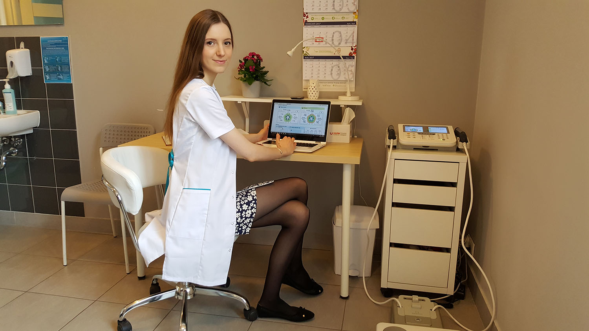

Kierując się racjonalnymi metodami leczenia
dietetycznego w swojej praktyce mam na uwadze by odpowiednio
zbilansowana dieta przyniosła Państwu podwójną korzyść - ze
strony wymarzonej sylwetki ciała ale przede wszystkim w aspekcie
zdrowotnym. Dbałość o prawidłową kompozycję posiłków, poprzez
staranny dobór odpowiednich produktów oraz optymalizację
bilansu energetycznego i pokrycie indywidualnego
zapotrzebowania Twojego organizmu na składniki pokarmowe – to
podstawowe cechy oferowanego planu dietetycznego.

Tematykę prac dyplomowych poświęciłam problematyce
żywienia pacjentów powikłanych nefrologicznie i diabetologicznie:
„Nefropatia cukrzycowa – postępowanie dietetyczne na
poszczególnych stadiach przewlekłej choroby nerek” oraz
„Czynniki ryzyka sercowo-naczyniowego u pacjentów po
transplantacji nerki”. Swoją pracę naukową
związałam z badaniem stanu odżywienia oraz ryzyka wystąpienia
powikłań sercowo–naczyniowych w grupie chorych funkcjonujących z przeszczepioną nerką.
Ryzyko wystąpienia epizodów sercowo-naczyniowych oraz innych powikłań
zdrowotnych - w tym kardiologicznych, kojarzone jest jako
najczęstsze następstwo nieprawidłowego żywienia i zaniechania
działań profilaktycznych – również w obszarze zmagań z nadwagą i
otyłością.
Podczas studiów swoje zaangażowanie kierowałam w stronę
pacjentów poradni diabetologicznych, nefrologicznych oraz
bariatrycznych. Odbyłam liczne praktyki zawodowe (między
innymi w Klinice Nadciśnienia Tętniczego i Diabetologii oraz w
Klinice Chorób Nerek i Nadciśnienia Dzieci i Młodzieży, położonych
na terenie Uniwersyteckiego Centrum Klinicznego w Gdańsku – UCK)
przygotowujące mnie do podjęcia roli dietetyka. Aktualnie, także
jako wolontariusz UCK, zajmuję się poradnictwem żywieniowym,
badaniem stanu odżywienia oraz analizą składu ciała pacjentów
kliniki nefrologii i transplantologii oraz uczestników programu
MOLTEST (“Opracowanie molekularnych testów wspomagających
wykrywanie wczesnego raka płuca – MOLTEST 2013” – trwających
do 2018 r.).
Zapraszam na pierwszą wizytę, podczas której wspólnie
omówimy i ustalimy jakie działania dietetyczne będą najlepsze dla
Twojego zdrowia i samopoczucia. Pamiętaj, że metoda etapowego
zbliżania się do pożądanego rezultatu kształtuje prawidłowe
nawyki żywieniowe oraz buduje doświadczenie, a stopniowo
zauważalne efekty mobilizują do dalszych osiągnięć w dziedzinie
prozdrowotnego stylu życia.
Serdecznie zapraszam!
mgr Paulina Wołoszyk